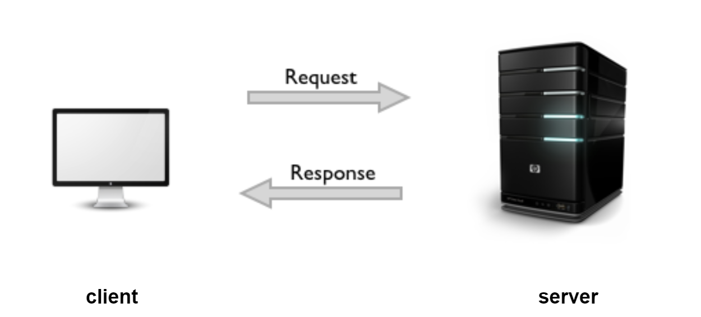
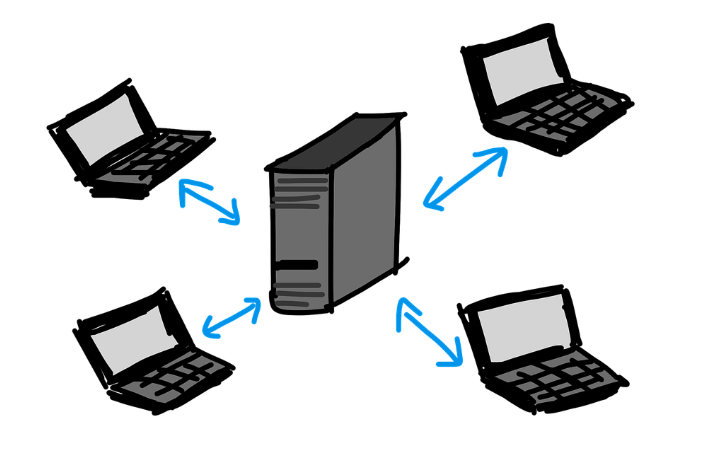

The easiest thing to compare Web Apps to is client-server apps
with a GUI.

The client sends a request to the server, which sends back a response. The output is shown to the client, visually, on their monitor.
However there are some very important differences that we'll get into.
Client-server development involves communication between two machines.
The client makes
requests to the server, and displays to the user whatever
it gets from responses to those requests.

Shoddy drawing of the communication between server and client machines
Unlike most code we're familiar with, this software runs on two parts
the Client, and the Server.
The client:
- Runs client-side software
- Usually involves a UI or GUI component
- Often has to support many different environments
The server:
- Runs server-side software
- Usually no UI or GUI (sometimes for configuration)
- Usually supports few OSes, often just one
Why do this?
- To save money
- Ease of compatibility
- Security
What does a server need?
Hardware
- Usually some powerful, redundant, and backed up often... Meaning it's very expensive
Software
- Can be implemented in any language
- Has full access to all resources of the server
Network
- Any network can be used (bluetooth, laser, wifi, etc)
- Usually a local network with high bandwidth and low latency
- Over any port and any protocol
What does a client need?
Client Hardware
- Usually not very powerful and cheap
Client software
- Needs to be distributed to customers
- Needs to be installed
- Needs to be maintained
- Needs to be synchronized with the server version (version control)
- Can access any resources of the client
- Can be implemented in any language
- Can use any library
- May need different versions for different Operating Systems
Server software (or web servers)
- Are the same as server software in the general client-server model
- Can be implemented in basically any language (as most languages can be simulated in JS)
- Has full access to all resources of the server
The network
- Must use internet, and is usually confined to standard ports
- Limited protocols, limited bandwidth, and high latency
The client OS
- Can be any (as long as a good browser runs on it)
- ^ this is because the browser "becomes the OS" for the application
Client Software
- Downloaded automatically and runs in your browser
- User doesn't need to manually synchronize or maintain it
- Can access only a very limited set of resources on the client machine
- Implementation language/libraries:
- limited choices (whatever is supported by the browser)
- Typically this is HTML + CSS + JavaScript
- However there exist other outdated choices (looking at you PHP)
- Communicates with the server using the HTTP Protocol (most of the time)